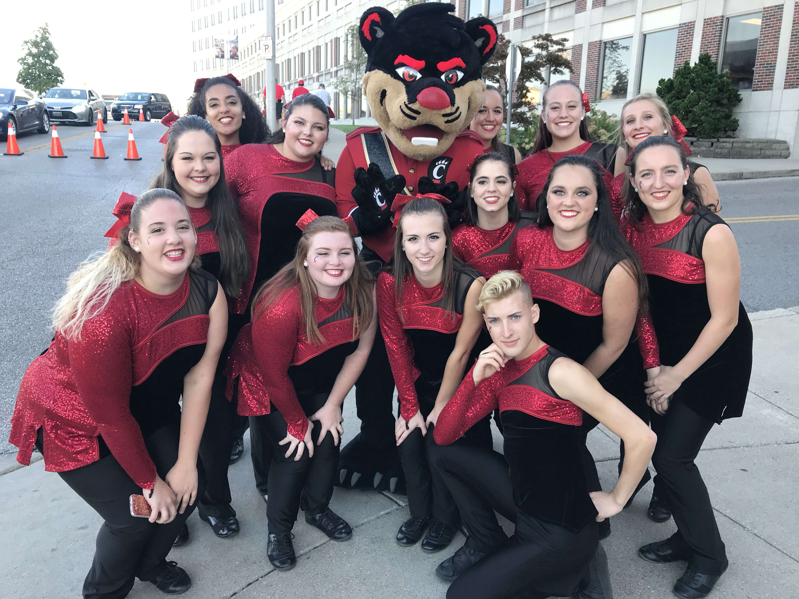

I currently volunteer with The Christ Hospital. I have helped out in the HR and Educational Resources department to help do technicial tasks and support the departments normal daily functions once a week.
I am currently a member of the UC Bearcat Bands since Fall 2016, and the current Color Guard Captian

Above is a screen shot from a project I created for one of my classes. It's a python project that could determine a person's zodiac sign from their birthday, and then pull the current day's horoscope from three different websites and protrayed them on the console.